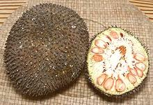

SAFARI
Users
Varieties
Alokon
[Birch Flower (marketing); Alokon, Alakon, Alucon, Himbabao (Philippine Ilocano); Baég (Philippine Pangasinan); Broussonetia luzonica]
Despite appearances and the common English marketing name, this plant is in no way related to the birch tree. It is a member of the Moraceae family, the Mulberries. This large shrub is closely related to the Paper Mulberry, the bark fibers of which are used to make Japanese Washi paper and tissue.
While it grows all over the Philippines the male inflorescences and
tender young leaves are only much used in the northeast (Luzon, etc.).
Alokon is also a common non-native in Hawaii, but I don't know if anyone
uses it for food there.
Details & Cooking.
Breadfruit
[`Ulu (Hawaii); Artocarpus altilis]
This is the tree Captain Bligh was transporting on the Bounty, from Tahiti to Jamaica to feed slaves working the sugar plantations. His crew decided instead to take the ship back to Tahiti for more nookie. He later made the voyage successfully in HMS Providence and breadfruit has been a major food item in the Caribbean ever since. It gets its name from a bread-like aroma when roasted or baked. Breadfruits grow to about 8 inches in diameter and get up to about 10 pounds, but the photo specimen was about 7 inches diameter and weighed 6-1/2 pounds.
There are two major categories of breadfruit: seeded and seedless. The
seedless (see photo) is the kind you are most likely to find in markets. The
seeded looks a lot like a small spherical
Jackfruit, inside and out, but less colorful. The seedless hybrids were
distributed across the Pacific islands in prehistoric times. Clearly they
could not have been spread by natural processes, being sterile. Breadfruit
small enough to grow out at the end of the branches rather than from the
trunk like Jackfruit.
Details & Cooking
Breadfruit, African
[Wild Jackfruit, African Boxwood: Afon (Yoruba); Ukwa (Igbo); Ediang (Efik, Ibibio); Nze (Benin); Bafutata (Hausa); Treculia africana]
This tree, up to 98 feet tall, is native to West and Central
Africa. It produces fruit up to 19 pounds. Unlike the Pacific Breadfruit,
it does not have a seedless variety, which is fine, because the seeds
are the edible part. A mature tree can produce over 400 pounds of dried
seeds a year. The seeds are highly nutritious, containing 38.3%
carbohydrate, 17.7% crude protein, and 15.9% fat (fresh seeds). They can
be pressed for oil, used as a replacement for yam or rice, and dry
roasted for use as a snack, said to have a flavor similar to peanuts.
Drawing by Joseph Dalton Hooker, copyright expired.
Breadnut
[Maya Nut; Ramón (Spanish); Cacaté (Mexico); Ojoche, Ojite, Ojushte, Ujushte, Ujuxte, Capomo, Mojo, Ox, Iximche, Masica (Mesoamerica); Brosimum alicastrum]
This fruit was cultivated by the Maya 2000 years ago and today is quite popular in the southernmost parts of Mexico and in Guatemala. It can be dried or boiled in salt water and then dried for use as a snack. Stewed it tastes somewhat like potatoes. It can also be ground and made into bread, and when roasted it tastes similar to coffee.
Breadnut is very nutritious, high in fiber, calcium, potassium, folic
acid, iron, zinc, protein and vitamins A, E, C and B. Neglected since the
fall of Mayan civilization, this fruit is now being promoted as a
commercial crop for village economies. When ripe the compound fruits
break apart dropping individual Maya Nuts onto the forest floor where
they are gathered. The trees grow to over 100 feet tall so harvesting
by other methods would be difficult.
Photo by Congobongo1041 contributed to the public domain.
Fig
[Ficus carica]
There are at least 850 species in the genus Ficus, almost all tropical trees, shrubs and vines. Only one temperate species, the Common Fig (carica) is significant for food. A few others have edible fruit but they are used only locally as "bush food".
The Common Fig is the most commercially important member of the whole mulberry family, and a strange fruit it is. Unlike other mulberries the flowers are inside with a small hole at the end of the fruit through which it's only pollinator, a wasp, can enter. Each species of fig has its own species of wasp and can be pollinated by no other.
The photo specimens are Brown Turkey (2 inch diameter, 2-1/2
ounces), Black Mission (1-1/4 inch diameter, 2 inches long, 7/8 ounce), and
Calimyrna (1-5/8 inch diameter, 1-1/2 inch long, 1 ounce). The very sweet
Black Mission and Calimyrna are the two varieties most often found fresh
in California. The Brown Turkey is larger with a tougher skin, but is
significantly less sweet. Figs are complicated, and there's a lot more
about them on the Details and
Cooking page.
Jackfruits & Related
Jackfruits is a generic term for a number similar mulberries in genus Artocarpus. They are all very large fruits, so large they cannot be supported out on the branches like even Breadfruit are, but grow on stems directly attached to the trunk and near the base of the largest limbs.
Jackfruit - Common[Chakka (Malayalm); Jaka (Portuguese); Nangka (Malay), Mit (Viet); Kanoon (Thai); Katahal (Hindi); Artocarpus heterophyllus many cultivars] Jackfruit is probably native to the Indian subcontinent and was carried to the Malay peninsula in ancient times. It has been cultivated for between 3000 and 6000 years. Today it is grown in almost all humid tropical lowland regions worldwide. A few are grown in Florida but not commercially. A variety grown in west central Mexico is different from the main Southeast Asian variety and is smaller, sweeter and less starchy with a somewhat different fruit cocktail-like flavor, but most shipped here from Mexico today are the Southeast Asian type. Jackfruit is not only the largest of the mulberries, it's the largest tree fruit in the world. How big they get varies by authority, but 80 pounds and 3 feet long is a pretty safe number. Those sold in North America generally run between 15 and 25 pounds. The photo specimen was about 18 inches long, weighed 21 pounds and was grown in Mexico. Except for the pointy outer rind, the entire fruit is edible in
various ways. Immature fruits, including inner rind, rags and seeds
are used in curries, The pulpy orange arils surrounding the seeds of
mature fruit are similar to a blend of banana and pineapple, and
simply used as fruit. The seeds are boiled briefly and then roasted
as a snack or sliced and used in curries.
Details and Cooking.
Jackfruit, "Raw" [Kathal, Enchor (India); Artocarpus heterophyllus]
This is an unripe jackfruit, but called "Raw Jackfruit" in most Indian
recipes. Many recipes, however, just call for "Jackfruit", but if it's
cooked like a vegetable you can presume unripe is what is meant. Whole
unripe fruit is not common in North America, but frozen is fairly
available, particularly in the Philippine markets. The photo specimen,
purchased at an Indian market in Los Angeles, was 6-3/4 inches long,
5-1/4 inches diameter and weighed 2 pounds 10 ounces.
Details and Cooking.
Cempedak[Chempedak; Mit To Nü (Viet); A. champeden syn. A. integer syn. A. polyphema, many unnamed varieties]
Native from Malaysia to New Guinea and now grown in Queensland, Australia,
this Jackfruit is more highly thought of in Vietnam than is the common
jackfruit, and sells at a significantly
higher price. It is much smaller and the fruit arils are softer than the
almost leathery arils of the big jackfruit, "rag" is not so much in the
way and the aroma and taste are a little more suggestive of Durian. In
Malaysia it's a popular item of street food - the arils (pulpy surround
of the seed) being dipped in batter and deep fried.
Photo by EquatorialSky contributed to the public domain.
Baby JackfruitThis is not actually a Jackfruit, it's a Gourd. See
Gac. Marang[Madang; Tarap; Johey Oak; Artocarpus odoratissimus] This fruit is native to Borneo and some islands of the Philippines. It is relatively small, 6 to 8 inches diameter, and considered structurally midway between a jackfruit and a seeded breadfruit. Like the breadfruit marang fruits grow from branches rather than the trunk. Internally it is much like a jackfruit but the fleshy arils are white rather than orange and about the size of a grape, around 5/8 inch. There is very little rag. They turn from green to greenish yellow when ripe and can be picked not quite ripe and allowed to ripen off the tree. Many consider this fruit superior to both jackfruit and chempedak. To
open, the fruit is cut around the circumference and twisted apart. It must
then be eaten within two or three hours because the fruit quickly oxidizes
and looses flavor. The seeds can be roasted same as the jackfruit but
are smaller. Photo from
City of Dipolog.
Permission requested.
|
Milk Tree
[Brosimum utile] Native to Costa Rica and northern South America down into Brazil. This tree has a light milky sap that is used by locals in place of cream in their coffee. It is related to the Breadnut Tree but is not noted for fruit.
Mulberry
[Morus spp.]
American Mulberry[Red Mulberry, Morus rubra]
This tree is native to the eastern half of North America from within
Canada to Florida. It produces fruit that is medium to dark red ripening
to very dark red, purple or nearly black. The fruit, up to 3/4 inch
long, is edible and in some varieties is sweet and tasty enough to
compete with the Black (Persian) Mulberry. This mulberry is not exploited
commercially but is enjoyed by any who have access to a tree. The tree
is, however, endangered due to hybridization with the inferior Chinese
White Mulberry which has spread just about everywhere.
Photo © i0001.
Black Mulberry[Persian Mulberry Morus nigra] The Persian mulberry, when ripe, is dark, sweet and juicy - a truly spectacular fruit and in great demand. If the fancy chefs on the West Side knew I had a tree they'd be watching for times when I'm not at home. These berries are fairly large, up to 1-1/2 inches long and 3/4 inch diameter. They are highly seasonal, my tree bearing ripe fruit from mid July to mid August. Unfortunately they are a severe harvesting and shipping problem. When
ripe they are extremely delicate and highly perishable - and rather sour
when not ripe. When I go out to gather them I find many unripe ones
fall off the tree if you look at them hard, and some completely ripe
ones have so strong a grip they can't be picked without completely
destroying them - there's no consistency.
Chinese White Mulberry[Morus alba] This tree originated in northern China, where its leaves are used to feed silkworms. It has been carried to various parts of the world, wherever someone thought they could set up a silk industry. They were brought to North America long ago for such a scheme, but the industry was never established here - even then labor costs were too high here. This tree is extremely effective at reproduction and now grows just
about everywhere in North America. The "volunteer" seedling I found in
my back yard canopied most of the yard in just a couple of years,
despite overhanging toxic blue gum eucalyptus. The berries are small,
moderately sweet and with a light but pleasant flavor. They're not
commercially viable, but I used to enjoy them as a child on the East
Coast and still like them. For a couple years I got almost none from
my huge tree because a flock of tiny brown birds knew exactly when to
swoop in and wiped them out. Lately they've came through weeks too
early and I'm now getting plenty, The photo specimens are accompanied
by our ubiquitous red kidney bean for scale and a typical Persian
mulberry for comparison.
White Mulberry, Dried[Yörük Dut Kurusu (Turkey); Morus alba var multicaulis] These are whiter and sweeter than the Chinese White Mulberry shown above. Dried they run about 65 count to the ounce and are similar in flavor to white raisins but drier. Dried white mulberries are used in the cuisines of Persia, the Stans and Turkey. One use is to pop one after a sip of tea to sweeten the mouth. I understand they are also included in some chickpea recipes. They can be used similarly to raisins in baked goods and Western chefs sometimes use them in sauces and toppings. Dried white mulberries can be found packed in plastic bags and tubs
in markets serving Turkish, Armenian and Iranian communities.
Long Mulberry[Taiwan long mulberry; Morus ???] I have found little about this mulberry except that several sites in Taiwan and China are selling cuttings. Reportedly a nursery here in Southern California sells trees, attributing them to Afghanistan / Pakistan. In June 2013 I purchased the photo specimense at a big farmer's market in Pasadena, California. They were 2-3/4 inches long and 1/2 inch in diameter. The price for a tiny basket was so high my mind immediately erased
it from memory to prevent distress. The flavor was just as highly
disappointing - faint flavor, faint sweetness. Berries from the huge
(volunteer) Chinese mulberry tree taking over my back yard are far
and away better. Until I encounter better long mulberries, I'm
declaring them to be of decorative value only.
|
Osage Orange
 [Hedge Apple, Maclura pomifera]
[Hedge Apple, Maclura pomifera]
Green, knobby and round, between the size of an apple and an orange,
this fruit is not generally considered edible, the Osage Orange is valued
for it's reputed insect repellant properties. Formerly the shrub was
planted as a fence for animal control but has been largely replaced by
barbed wire.
Photo by Katpatuka distributed under
Free Art License 1.3.